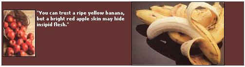
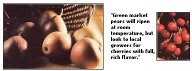

"To avoid cancer and obesity, one should increase fiber, consume more fruits and vegetables and cut down on fatty meats." The advice seems to be everywhere these days. And we're taking it. After 60 years of decreasing U.S. fresh fruit consumption, the bestselling new produce items are exotic tropical fruits. We've learned that these fresh treats are not only delicious, but also contain important vitamins and the soluble fiber known as pectin.
Still, the buyer must beware! Fruit growers have strong incentives to ship firm immature fruits - which are more likely to arrive without blemishes - rather than more delicate ripe specimens. All too often, then, we hope for a burst of sweet juice on the tongue, but find little more than a bland mush, at best. Only careful shopping, home ripening and proper storage can guarantee fruit that fulfills its promise of an endless summer for the palate.
Two Types of Fruit
Most people think that all fruits continue to sweeten for a time after harvest. Not so. Fruits can be divided into two classes: climacteric and nonclimacteric. When picked at the green-ripe stage, the climacteric fruits-peaches, apples, avocados, bananas, mangoes, papayas, plums, persimmons, tomatoes, pears, kiwis, apricots and many of the "new" tropicals - contain large nutrient stores which change to sugars as the flesh ripens. (If harvested too soon, however, they'll fail to improve at all, and will simply shrink, soften and eventually spoil.)
On the other hand, nonclimacteric fruits - cherries, citrus, figs, grapes, melons, pineapples, pomegranates, strawberries - do not have reserves of starches or oils, and thus will never get sweeter after they're picked.
When selecting climacteric types, remember that red, yellow or orange fruits are not always ripe and that green fruits are not always immature. You can trust yellow bananas or pears and bright red tomatoes - but color is of little help with apples, and of no use in determining which peaches or nectarines are best.
In fact, many of the new peach and nectarine varieties have been selected to redden while they're still unripe. Unless their flesh gives slightly to the touch, and background color is appropriate to the type (yellow or white, not pale green), peaches and nectarines will never ripen. If you pick out relatively mature peaches or nectarines, however, they will continue to sweeten at room temperature (70° to 80°F).
Apricots are more perishable. Select only those that are richly colored, and chill them immediately for use within one or two days. Most varieties continue to ripen to some degree, even in the cold.
Unfortunately, market plums are generally unripe. Santa Rosas too often arrive in stores, not luscious and black-ripe, but as puckery, red drupes which never sweeten. Since some of the best plum varieties are delicate, many are not even available in markets. If possible, buy your ripe plums, peaches and nectarines directly from the farmer, or raise your own.
A bright red apple skin may hide insipid flesh. Ignore the color, and keep sampling until you learn which apple cultivars taste best to you. For optimum enjoyment, vary your choices seasonally. Summer-maturing apples such as Gravenstein and Grimes Golden are best soon after they ripen. Purchase your favorite storage apples - Golden Delicious, Pippin, Jonathan, McIntosh, Granny Smith, Red Delicious - at other seasons.
If you raise keeping apples, they can be stored for many months at 32°F in "zippered" plastic bags (the natural sugars prevent freezing at this temperature). Their respiration will use up the oxygen and release quality-protecting carbon dioxide and moisture into the bag.
Conversely, to hasten the ripening of climacteric fruits - including apples and those annoyingly hard avocados - place them in a covered fruit bowl at room temperature, and add a ripe apple to generate ripeness-inducing ethylene gas.
Most shoppers know that store-bought green bananas will turn yellow within a few days. But watch out. Lightly touch dark green bananas. Unless they give slightly they won't likely ripen.
Warmly colored though firm papayas, persimmons and mangoes will be reliably sweet after you hold them at room temperature for a few days. If you plan to make chutney, however, green mangoes are often specified. Always peel mangoes before using - their skins contain small quantities of the same allergen that causes poison ivy and poison oak. (If your skin is especially sensitive, you might want to wear rubber gloves while skinning the fruit.) To avoid a bitter taste, the American persimmon should be squishy-ripe before eating, while the flat, crisp Oriental persimmons can be eaten out of hand like an apple.
Pears are an ideal market fruit because they must be picked green. To ripen, hold previously refrigerated pears at room temperature until they soften slightly, then keep cold for use within a few days. Bartlett, the favorite summer pear, is choice only in July, August and September. (In October, Bartletts ripen with brown centers or mealy flesh.) The winter pears - D'Anjou, Bosc and Comice - are in season from October through the winter, but they too may deteriorate toward the end of the season.
Though pricey, those fuzzy, brown kiwi fruits are delicious. Firm ones keep a long time in the cold, but they get sweeter and softer after a few days at room temperature. Kiwis should be peeled before eating.
Surprisingly, nonclimacteric fruits of excellent quality are easy to find, possibly because most cannot tolerate long-term storage. All strawberries, raspberries, blackberries, blueberries, figs and grapes will be tasty if they look fresh and ripe. But remember, they won't get any sweeter after you bring them home.
Contrary to popular belief, it's easy to recognize ripe melons. A prime cantaloupe will be round, with no broken stem present. Its straw-colored, high netting will have no smooth patches. If you can hear the seeds rattle, or if there are hollows on the surface, the melon is overripe. Summer is cantaloupe season. Don't bother to buy them in spring or fall.
When choosing a honeydew, find one with a yellowish, slightly sticky rind. The whitish, smooth melons are green - and they won't ripen. Prime honeydews are usually available only in late August and September. Ask your grocer to help you learn the ripeness criteria of other specialty melons from your own region.
Citrus fruits are so familiar that you probably know a lot about them already. But don't forget that superior specimens are always heavy for their size. You can eliminate dry, overripe citrus by leaving the lighter fruits in the bin. The flavor of grapefruit depends upon the climate where it is grown. Those from Florida, Texas and Arizona are sweetest, and the new crops from these states mature in fall. By late spring the tart fruits from California fill the bins. Wide, flat grapefruits tend to have the larger segments.
It's best to select pineapples that are yellowish with no dark blemishes. At home, cut off the leaves without slicing into the fruit, and keep the pineapple in the refrigerator.
Only bright red, plump pomegranates contain premium dark, juicy seeds. To harvest the seeds without staining your clothing, put the fruit in a bowl of cold water. Beneath the surface, break the fruit and pull out the seeds. These will sink while the pulp will float. The seeds can be frozen dry for future use or whirled in the blender and strained to either make juice or be combined with sugar to make grenadine syrup.
Cherries are the least reliable of the nonclimacteric fruits. Unfortunately, the dark red color of market cherries often hides an insipid immaturity. Only the luscious treeripened cherries from your own garden, or those picked locally, will have the real cherry flavor that you want.
An Arizona study recently reported that 17% of the fruits purchased by the average household were thrown out in the garbage. If you follow a few simple selection and storage rules, however, you can eliminate that kind of waste from your kitchen, while you celebrate the rounding of the seasons with a constant variety of delicious ripe fruits.
|
 |
 |
|